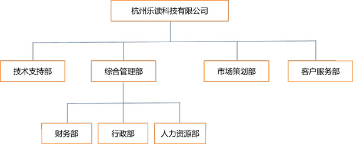

杭州乐读科技有限公司简介
杭州乐读科技有限公司（下称“公司”或“本公司”）是由罗尚虎先生、朱一闻先生出资成立的内资公司，公司创建于2014年12月25日，注册资本人民币：壹仟万元，法定代表人罗尚虎，注册地址为杭州市滨江区长河街道网商路599号4幢408室。
目前，公司已拥有多名专业人才，包括网络管理员、研发人员、市场人员和后勤人员。大多数员工都拥有互联网行业的工作经验。
针对目前中国数字音乐和电子阅读市场的兴起以及各移动端音乐产品和电子阅读产品的逐渐成熟，为顺应新的产业环境和结构，本公司应运而生，创建数字云音乐娱乐平台和数字内容阅读平台。
在音乐方面，与唱片公司和专业音乐人紧密合作，充分强调其音乐垂直属性，提供原创音乐人、大牌主播通过网络与用户进行音乐互动服务。
在阅读方面，与内容版权方、名家合作，第一时间获取时下热门精品书籍，供广大读者在阅读。
